<!DOCTYPE HTML>
<html lang="" >
    <head>
        <title>导论 · GitBook</title>
        <meta charset="UTF-8">
        <meta http-equiv="X-UA-Compatible" content="IE=edge" />
        <meta content="text/html; charset=utf-8" http-equiv="Content-Type">
        <meta name="description" content="">
        <meta name="generator" content="GitBook 3.2.0">
        
        
        
    
    <link rel="stylesheet" href="gitbook/style.css">

    
            
                
                <link rel="stylesheet" href="gitbook/gitbook-plugin-highlight/website.css">
                
            
                
                <link rel="stylesheet" href="gitbook/gitbook-plugin-search/search.css">
                
            
                
                <link rel="stylesheet" href="gitbook/gitbook-plugin-fontsettings/website.css">
                
            
        

    

    
        
    
        
    
        
    
        
    
        
    
        
    

        
    
    
    <meta name="HandheldFriendly" content="true"/>
    <meta name="viewport" content="width=device-width, initial-scale=1, user-scalable=no">
    <meta name="apple-mobile-web-app-capable" content="yes">
    <meta name="apple-mobile-web-app-status-bar-style" content="black">
    <link rel="apple-touch-icon-precomposed" sizes="152x152" href="gitbook/images/apple-touch-icon-precomposed-152.png">
    <link rel="shortcut icon" href="gitbook/images/favicon.ico" type="image/x-icon">

    
    <link rel="next" href="dcos概览.html" />
    
    

    </head>
    <body>
        
<div class="book">
    <div class="book-summary">
        
            
<div id="book-search-input" role="search">
    <input type="text" placeholder="Type to search" />
</div>

            
                <nav role="navigation">
                


<ul class="summary">
    
    

    

    
        
        <li class="header">DC/OS之导论</li>
        
        
    
        <li class="chapter active" data-level="1.1" data-path="./">
            
                <a href="./">
            
                    
                    导论
            
                </a>
            

            
            <ul class="articles">
                
    
        <li class="chapter " data-level="1.1.1" data-path="dcos概览.html">
            
                <a href="dcos概览.html">
            
                    
                    DC/OS概览
            
                </a>
            

            
        </li>
    
        <li class="chapter " data-level="1.1.2" data-path="dcos-basic-theory.html">
            
                <a href="dcos-basic-theory.html">
            
                    
                    系统基础
            
                </a>
            

            
            <ul class="articles">
                
    
        <li class="chapter " data-level="1.1.2.1" data-path="dcos-basic-theory-terminologies.html">
            
                <a href="dcos-basic-theory-terminologies.html">
            
                    
                    名词术语
            
                </a>
            

            
        </li>
    

            </ul>
            
        </li>
    
        <li class="chapter " data-level="1.1.3" data-path="dcos-theory-schedule-strategy.html">
            
                <a href="dcos-theory-schedule-strategy.html">
            
                    
                    资源调度
            
                </a>
            

            
        </li>
    

            </ul>
            
        </li>
    
        <li class="chapter " data-level="1.2" data-path="dcos-install.html">
            
                <a href="dcos-install.html">
            
                    
                    环境搭建
            
                </a>
            

            
            <ul class="articles">
                
    
        <li class="chapter " data-level="1.2.1" data-path="dcos-install-default.html">
            
                <a href="dcos-install-default.html">
            
                    
                    安装环境准备
            
                </a>
            

            
            <ul class="articles">
                
    
        <li class="chapter " data-level="1.2.1.1" data-path="dcos-install-docker-on-centos.html">
            
                <a href="dcos-install-docker-on-centos.html">
            
                    
                    在Centos上安装Docker
            
                </a>
            

            
        </li>
    

            </ul>
            
        </li>
    
        <li class="chapter " data-level="1.2.2" data-path="dcos-install-by-gui.html">
            
                <a href="dcos-install-by-gui.html">
            
                    
                    GUI安装
            
                </a>
            

            
        </li>
    
        <li class="chapter " data-level="1.2.3" data-path="dcos-install-by-cli.html">
            
                <a href="dcos-install-by-cli.html">
            
                    
                    通过CLI安装
            
                </a>
            

            
        </li>
    
        <li class="chapter " data-level="1.2.4" data-path="dcos-install-by-advanced-mode.html">
            
                <a href="dcos-install-by-advanced-mode.html">
            
                    
                    高级安装
            
                </a>
            

            
        </li>
    

            </ul>
            
        </li>
    
        <li class="chapter " data-level="1.3" data-path="dcos-install-maintainance.html">
            
                <a href="dcos-install-maintainance.html">
            
                    
                    集群维护
            
                </a>
            

            
            <ul class="articles">
                
    
        <li class="chapter " data-level="1.3.1" data-path="dcos-install-backup-installer-file.html">
            
                <a href="dcos-install-backup-installer-file.html">
            
                    
                    备份集群安装文件
            
                </a>
            

            
        </li>
    
        <li class="chapter " data-level="1.3.2" data-path="dcos-install-nodes-management.html">
            
                <a href="dcos-install-nodes-management.html">
            
                    
                    集群节点管理
            
                </a>
            

            
        </li>
    
        <li class="chapter " data-level="1.3.3" data-path="dcos-install-m-uninstall-all.html">
            
                <a href="dcos-install-m-uninstall-all.html">
            
                    
                    集群卸载
            
                </a>
            

            
        </li>
    

            </ul>
            
        </li>
    
        <li class="chapter " data-level="1.4" data-path="dcos-install-faq.html">
            
                <a href="dcos-install-faq.html">
            
                    
                    FAQ
            
                </a>
            

            
        </li>
    

    
        
        <li class="header">DC/OS之原理</li>
        
        
    
        <li class="chapter " data-level="2.1" data-path="dcos-theory-overview.html">
            
                <a href="dcos-theory-overview.html">
            
                    
                    理解DC/OS
            
                </a>
            

            
            <ul class="articles">
                
    
        <li class="chapter " data-level="2.1.1" data-path="dcos-dcos-admin-ports.html">
            
                <a href="dcos-dcos-admin-ports.html">
            
                    
                    DC/OS内部端口
            
                </a>
            

            
        </li>
    

            </ul>
            
        </li>
    
        <li class="chapter " data-level="2.2" data-path="dcos-mesos.html">
            
                <a href="dcos-mesos.html">
            
                    
                    Mesos
            
                </a>
            

            
            <ul class="articles">
                
    
        <li class="chapter " data-level="2.2.1" data-path="dcos-mesos-attributes-and-resources.html">
            
                <a href="dcos-mesos-attributes-and-resources.html">
            
                    
                    资源与属性
            
                </a>
            

            
        </li>
    
        <li class="chapter " data-level="2.2.2" data-path="dcos-mesos-roles.html">
            
                <a href="dcos-mesos-roles.html">
            
                    
                    角色（Roles）
            
                </a>
            

            
        </li>
    
        <li class="chapter " data-level="2.2.3" data-path="dcos-mesos-reservation.html">
            
                <a href="dcos-mesos-reservation.html">
            
                    
                    资源预留（Reservation）
            
                </a>
            

            
        </li>
    
        <li class="chapter " data-level="2.2.4" data-path="dcos-mesos-weights.html">
            
                <a href="dcos-mesos-weights.html">
            
                    
                    权重（Weights）
            
                </a>
            

            
        </li>
    
        <li class="chapter " data-level="2.2.5" data-path="dcos-mesos-quota.html">
            
                <a href="dcos-mesos-quota.html">
            
                    
                    配额（Quota）
            
                </a>
            

            
        </li>
    
        <li class="chapter " data-level="2.2.6" data-path="dcos-mesos-agent-recovery.html">
            
                <a href="dcos-mesos-agent-recovery.html">
            
                    
                    节点恢复
            
                </a>
            

            
        </li>
    
        <li class="chapter " data-level="2.2.7" data-path="dcos-mesos-authorization.html">
            
                <a href="dcos-mesos-authorization.html">
            
                    
                    Authorization
            
                </a>
            

            
        </li>
    
        <li class="chapter " data-level="2.2.8" data-path="dcos-mesos-resources-drf.html">
            
                <a href="dcos-mesos-resources-drf.html">
            
                    
                    资源分配
            
                </a>
            

            
        </li>
    

            </ul>
            
        </li>
    
        <li class="chapter " data-level="2.3" data-path="dcos-marathon.html">
            
                <a href="dcos-marathon.html">
            
                    
                    Marathon
            
                </a>
            

            
            <ul class="articles">
                
    
        <li class="chapter " data-level="2.3.1" data-path="dcos-marathon-health-checks.html">
            
                <a href="dcos-marathon-health-checks.html">
            
                    
                    应用健康检查
            
                </a>
            

            
        </li>
    
        <li class="chapter " data-level="2.3.2" data-path="dcos-marathon-container.html">
            
                <a href="dcos-marathon-container.html">
            
                    
                    容器运行管理
            
                </a>
            

            
        </li>
    
        <li class="chapter " data-level="2.3.3" data-path="dcos-marathon-app-deployments.html">
            
                <a href="dcos-marathon-app-deployments.html">
            
                    
                    应用服务部署
            
                </a>
            

            
        </li>
    
        <li class="chapter " data-level="2.3.4" data-path="dcos-marathon-event-bus.html">
            
                <a href="dcos-marathon-event-bus.html">
            
                    
                    事件总线
            
                </a>
            

            
        </li>
    
        <li class="chapter " data-level="2.3.5" data-path="dcos-marathon-constraints.html">
            
                <a href="dcos-marathon-constraints.html">
            
                    
                    约束
            
                </a>
            

            
        </li>
    

            </ul>
            
        </li>
    
        <li class="chapter " data-level="2.4" data-path="dcos-system-components.html">
            
                <a href="dcos-system-components.html">
            
                    
                    系统服务
            
                </a>
            

            
            <ul class="articles">
                
    
        <li class="chapter " data-level="2.4.1" data-path="dcos-component-exhibitor.html">
            
                <a href="dcos-component-exhibitor.html">
            
                    
                    Exhibitor
            
                </a>
            

            
            <ul class="articles">
                
    
        <li class="chapter " data-level="2.4.1.1" data-path="dcos-component-exhibitor-notes.html">
            
                <a href="dcos-component-exhibitor-notes.html">
            
                    
                    理解Exhibitor
            
                </a>
            

            
        </li>
    
        <li class="chapter " data-level="2.4.1.2" data-path="dcos-component-exhibitor-as-service.html">
            
                <a href="dcos-component-exhibitor-as-service.html">
            
                    
                    Exhibitor on DC/OS
            
                </a>
            

            
        </li>
    

            </ul>
            
        </li>
    
        <li class="chapter " data-level="2.4.2" data-path="dcos-component-adminrouter.html">
            
                <a href="dcos-component-adminrouter.html">
            
                    
                    Adminrouter
            
                </a>
            

            
        </li>
    
        <li class="chapter " data-level="2.4.3" data-path="dcos-component-3dt.html">
            
                <a href="dcos-component-3dt.html">
            
                    
                    3DT
            
                </a>
            

            
        </li>
    
        <li class="chapter " data-level="2.4.4" data-path="dcos-component-cosmos.html">
            
                <a href="dcos-component-cosmos.html">
            
                    
                    Cosmos
            
                </a>
            

            
        </li>
    
        <li class="chapter " data-level="2.4.5" data-path="dcos-component-minuteman.html">
            
                <a href="dcos-component-minuteman.html">
            
                    
                    Minuteman
            
                </a>
            

            
        </li>
    
        <li class="chapter " data-level="2.4.6" data-path="dcos-component-spartan.html">
            
                <a href="dcos-component-spartan.html">
            
                    
                    Spartan
            
                </a>
            

            
        </li>
    
        <li class="chapter " data-level="2.4.7" data-path="dcos-component-mesos-dns.html">
            
                <a href="dcos-component-mesos-dns.html">
            
                    
                    Mesos-DNS
            
                </a>
            

            
        </li>
    
        <li class="chapter " data-level="2.4.8" data-path="dcos-component-metronome.html">
            
                <a href="dcos-component-metronome.html">
            
                    
                    Metronome
            
                </a>
            

            
        </li>
    

            </ul>
            
        </li>
    
        <li class="chapter " data-level="2.5" data-path="dcos-mesos-containerizer.html">
            
                <a href="dcos-mesos-containerizer.html">
            
                    
                    容器化
            
                </a>
            

            
            <ul class="articles">
                
    
        <li class="chapter " data-level="2.5.1" data-path="dcos-mesos-containerizer-internals.html">
            
                <a href="dcos-mesos-containerizer-internals.html">
            
                    
                    容器化实现细节
            
                </a>
            

            
        </li>
    
        <li class="chapter " data-level="2.5.2" data-path="dcos-mesos-mesos-containerizer.html">
            
                <a href="dcos-mesos-mesos-containerizer.html">
            
                    
                    Mesos容器化
            
                </a>
            

            
            <ul class="articles">
                
    
        <li class="chapter " data-level="2.5.2.1" data-path="dcos-mesos-mesos-containerizer-docker-volume.html">
            
                <a href="dcos-mesos-mesos-containerizer-docker-volume.html">
            
                    
                    Docker卷支持
            
                </a>
            

            
        </li>
    
        <li class="chapter " data-level="2.5.2.2" data-path="dcos-mesos-containerizer-cni.html">
            
                <a href="dcos-mesos-containerizer-cni.html">
            
                    
                    容器网络接口
            
                </a>
            

            
        </li>
    

            </ul>
            
        </li>
    
        <li class="chapter " data-level="2.5.3" data-path="dcos-mesos-docker-containerizer.html">
            
                <a href="dcos-mesos-docker-containerizer.html">
            
                    
                    Docker容器化
            
                </a>
            

            
        </li>
    
        <li class="chapter " data-level="2.5.4" data-path="dcos-marathon-container.html">
            
                <a href="dcos-marathon-container.html">
            
                    
                    容器运行管理
            
                </a>
            

            
        </li>
    

            </ul>
            
        </li>
    
        <li class="chapter " data-level="2.6" data-path="dcos-network.html">
            
                <a href="dcos-network.html">
            
                    
                    容器网络
            
                </a>
            

            
            <ul class="articles">
                
    
        <li class="chapter " data-level="2.6.1" data-path="dcos-network-marathon-ports.html">
            
                <a href="dcos-network-marathon-ports.html">
            
                    
                    服务端口配置
            
                </a>
            

            
        </li>
    

            </ul>
            
        </li>
    
        <li class="chapter " data-level="2.7" data-path="dcos-service-discovery.html">
            
                <a href="dcos-service-discovery.html">
            
                    
                    服务发现与负载
            
                </a>
            

            
            <ul class="articles">
                
    
        <li class="chapter " data-level="2.7.1" data-path="dcos-network-vips.html">
            
                <a href="dcos-network-vips.html">
            
                    
                    VIPs
            
                </a>
            

            
            <ul class="articles">
                
    
        <li class="chapter " data-level="2.7.1.1" data-path="dcos-network-vips-lb.html">
            
                <a href="dcos-network-vips-lb.html">
            
                    
                    基于VIPs的负载调度
            
                </a>
            

            
        </li>
    

            </ul>
            
        </li>
    
        <li class="chapter " data-level="2.7.2" data-path="dcos-component-marathon-lb.html">
            
                <a href="dcos-component-marathon-lb.html">
            
                    
                    Marathon-LB
            
                </a>
            

            
            <ul class="articles">
                
    
        <li class="chapter " data-level="2.7.2.1" data-path="dcos-component-marathon-lb-basic.html">
            
                <a href="dcos-component-marathon-lb-basic.html">
            
                    
                    基本概念
            
                </a>
            

            
        </li>
    
        <li class="chapter " data-level="2.7.2.2" data-path="dcos-component-marathon-lb-advanced.html">
            
                <a href="dcos-component-marathon-lb-advanced.html">
            
                    
                    高级特性
            
                </a>
            

            
        </li>
    
        <li class="chapter " data-level="2.7.2.3" data-path="dcos-component-marathon-lb-template.html">
            
                <a href="dcos-component-marathon-lb-template.html">
            
                    
                    配置参考
            
                </a>
            

            
        </li>
    
        <li class="chapter " data-level="2.7.2.4" data-path="dcos-component-marathon-lb-tutorials.html">
            
                <a href="dcos-component-marathon-lb-tutorials.html">
            
                    
                    应用示例
            
                </a>
            

            
        </li>
    

            </ul>
            
        </li>
    
        <li class="chapter " data-level="2.7.3" data-path="dcos-component-mesos-dns.html">
            
                <a href="dcos-component-mesos-dns.html">
            
                    
                    Mesos-DNS
            
                </a>
            

            
            <ul class="articles">
                
    
        <li class="chapter " data-level="2.7.3.1" data-path="dcos-component-mesos-dns-service-naming.html">
            
                <a href="dcos-component-mesos-dns-service-naming.html">
            
                    
                    服务命名
            
                </a>
            

            
        </li>
    
        <li class="chapter " data-level="2.7.3.2" data-path="dcos-component-mesos-dns-http-api.html">
            
                <a href="dcos-component-mesos-dns-http-api.html">
            
                    
                    HTTP接口
            
                </a>
            

            
        </li>
    
        <li class="chapter " data-level="2.7.3.3" data-path="dcos-component-mesos-dns-config.html">
            
                <a href="dcos-component-mesos-dns-config.html">
            
                    
                    配置与优化
            
                </a>
            

            
        </li>
    

            </ul>
            
        </li>
    

            </ul>
            
        </li>
    
        <li class="chapter " data-level="2.8" data-path="dcos-storage.html">
            
                <a href="dcos-storage.html">
            
                    
                    存储策略与方案
            
                </a>
            

            
            <ul class="articles">
                
    
        <li class="chapter " data-level="2.8.1" data-path="dcos-storage-multi-disks.html">
            
                <a href="dcos-storage-multi-disks.html">
            
                    
                    磁盘资源
            
                </a>
            

            
            <ul class="articles">
                
    
        <li class="chapter " data-level="2.8.1.1" data-path="dcos-storage-mount-disk-resources.html">
            
                <a href="dcos-storage-mount-disk-resources.html">
            
                    
                    增加磁盘资源
            
                </a>
            

            
        </li>
    
        <li class="chapter " data-level="2.8.1.2" data-path="dcos-storage-nfs-server.html">
            
                <a href="dcos-storage-nfs-server.html">
            
                    
                    增加NFS存储
            
                </a>
            

            
        </li>
    

            </ul>
            
        </li>
    
        <li class="chapter " data-level="2.8.2" data-path="dcos-storage-persistent-volume.html">
            
                <a href="dcos-storage-persistent-volume.html">
            
                    
                    持久化卷
            
                </a>
            

            
            <ul class="articles">
                
    
        <li class="chapter " data-level="2.8.2.1" data-path="dcos-storage-persistent-volume-local.html">
            
                <a href="dcos-storage-persistent-volume-local.html">
            
                    
                    本地持久化卷
            
                </a>
            

            
        </li>
    
        <li class="chapter " data-level="2.8.2.2" data-path="外部持久化卷.html">
            
                <a href="外部持久化卷.html">
            
                    
                    外部持久化卷
            
                </a>
            

            
        </li>
    

            </ul>
            
        </li>
    
        <li class="chapter " data-level="2.8.3" data-path="dcos-storage-sansds.html">
            
                <a href="dcos-storage-sansds.html">
            
                    
                    SAN/SDS
            
                </a>
            

            
            <ul class="articles">
                
    
        <li class="chapter " data-level="2.8.3.1" data-path="dcos-storage-sansds-rexray.html">
            
                <a href="dcos-storage-sansds-rexray.html">
            
                    
                    Rex-Ray
            
                </a>
            

            
        </li>
    
        <li class="chapter " data-level="2.8.3.2" data-path="dcos-storage-sansds-flocker.html">
            
                <a href="dcos-storage-sansds-flocker.html">
            
                    
                    Flocker
            
                </a>
            

            
        </li>
    
        <li class="chapter " data-level="2.8.3.3" data-path="dcos-storage-sansds-convoy.html">
            
                <a href="dcos-storage-sansds-convoy.html">
            
                    
                    Convoy
            
                </a>
            

            
        </li>
    

            </ul>
            
        </li>
    

            </ul>
            
        </li>
    
        <li class="chapter " data-level="2.9" data-path="dcos-component-universe.html">
            
                <a href="dcos-component-universe.html">
            
                    
                    Universe
            
                </a>
            

            
            <ul class="articles">
                
    
        <li class="chapter " data-level="2.9.1" data-path="dcos-component-universe-usage.html">
            
                <a href="dcos-component-universe-usage.html">
            
                    
                    应用的管理
            
                </a>
            

            
        </li>
    

            </ul>
            
        </li>
    

    
        
        <li class="header">DC/OS之服务</li>
        
        
    
        <li class="chapter " data-level="3.1" data-path="dcos-service-stateful.html">
            
                <a href="dcos-service-stateful.html">
            
                    
                    有状态应用服务
            
                </a>
            

            
        </li>
    
        <li class="chapter " data-level="3.2" data-path="dcos-service-management.html">
            
                <a href="dcos-service-management.html">
            
                    
                    服务的管理
            
                </a>
            

            
        </li>
    
        <li class="chapter " data-level="3.3" data-path="jenkins-on-dcos.html">
            
                <a href="jenkins-on-dcos.html">
            
                    
                    Jenkins on DC/OS
            
                </a>
            

            
            <ul class="articles">
                
    
        <li class="chapter " data-level="3.3.1" data-path="dcos-service-jenkins-custom-dind.html">
            
                <a href="dcos-service-jenkins-custom-dind.html">
            
                    
                    自定义Jenkins Slave容器镜像
            
                </a>
            

            
        </li>
    
        <li class="chapter " data-level="3.3.2" data-path="deploy.html">
            
                <a href="deploy.html">
            
                    
                    示例：在Jenkins on DCOS上编译部署Tomcat应用
            
                </a>
            

            
        </li>
    

            </ul>
            
        </li>
    
        <li class="chapter " data-level="3.4" data-path="dcos-service-storm.html">
            
                <a href="dcos-service-storm.html">
            
                    
                    Storm on DC/OS
            
                </a>
            

            
            <ul class="articles">
                
    
        <li class="chapter " data-level="3.4.1" data-path="dcos-service-storm-config.html">
            
                <a href="dcos-service-storm-config.html">
            
                    
                    Storm集群配置
            
                </a>
            

            
        </li>
    
        <li class="chapter " data-level="3.4.2" data-path="dcos-service-storm-deploy.html">
            
                <a href="dcos-service-storm-deploy.html">
            
                    
                    部署Storm集群
            
                </a>
            

            
        </li>
    
        <li class="chapter " data-level="3.4.3" data-path="dcos-service-storm-clients.html">
            
                <a href="dcos-service-storm-clients.html">
            
                    
                    访问Storm集群
            
                </a>
            

            
        </li>
    

            </ul>
            
        </li>
    
        <li class="chapter " data-level="3.5" data-path="dcos-service-hdfs.html">
            
                <a href="dcos-service-hdfs.html">
            
                    
                    HDFS on DC/OS
            
                </a>
            

            
        </li>
    
        <li class="chapter " data-level="3.6" data-path="dcos-service-cassandra.html">
            
                <a href="dcos-service-cassandra.html">
            
                    
                    Cassandra on DC/OS
            
                </a>
            

            
        </li>
    
        <li class="chapter " data-level="3.7" data-path="dcos-service-kafka.html">
            
                <a href="dcos-service-kafka.html">
            
                    
                    Kafka on DC/OS
            
                </a>
            

            
        </li>
    

    
        
        <li class="header">DCOS之管理</li>
        
        
    
        <li class="chapter " data-level="4.1" data-path="dcos-admin-cli.html">
            
                <a href="dcos-admin-cli.html">
            
                    
                    DCOS CLI
            
                </a>
            

            
        </li>
    
        <li class="chapter " data-level="4.2" data-path="dcos-admin-ui.html">
            
                <a href="dcos-admin-ui.html">
            
                    
                    DCOS 管理UI
            
                </a>
            

            
        </li>
    
        <li class="chapter " data-level="4.3" data-path="dcos-admin-monitoring.html">
            
                <a href="dcos-admin-monitoring.html">
            
                    
                    监控管理
            
                </a>
            

            
            <ul class="articles">
                
    
        <li class="chapter " data-level="4.3.1" data-path="dcos-admin-monitoring-dcos.html">
            
                <a href="dcos-admin-monitoring-dcos.html">
            
                    
                    DC/OS的监控
            
                </a>
            

            
        </li>
    
        <li class="chapter " data-level="4.3.2" data-path="dcos-admin-monitoring-collect.html">
            
                <a href="dcos-admin-monitoring-collect.html">
            
                    
                    信息采集
            
                </a>
            

            
            <ul class="articles">
                
    
        <li class="chapter " data-level="4.3.2.1" data-path="dcos-admin-monitoring-docker.html">
            
                <a href="dcos-admin-monitoring-docker.html">
            
                    
                    cAdvisor
            
                </a>
            

            
        </li>
    
        <li class="chapter " data-level="4.3.2.2" data-path="dcos-admin-monitoring-prometheus-instrumenting.html">
            
                <a href="dcos-admin-monitoring-prometheus-instrumenting.html">
            
                    
                    Prometheus
            
                </a>
            

            
        </li>
    

            </ul>
            
        </li>
    
        <li class="chapter " data-level="4.3.3" data-path="dcos-admin-monitoring-storage.html">
            
                <a href="dcos-admin-monitoring-storage.html">
            
                    
                    数据存储查询
            
                </a>
            

            
            <ul class="articles">
                
    
        <li class="chapter " data-level="4.3.3.1" data-path="dcos-admin-monitoring-storage-prometheus.html">
            
                <a href="dcos-admin-monitoring-storage-prometheus.html">
            
                    
                    Prometheus
            
                </a>
            

            
            <ul class="articles">
                
    
        <li class="chapter " data-level="4.3.3.1.1" data-path="dcos-admin-monitoring-prometheus-concepts.html">
            
                <a href="dcos-admin-monitoring-prometheus-concepts.html">
            
                    
                    概念与使用
            
                </a>
            

            
        </li>
    
        <li class="chapter " data-level="4.3.3.1.2" data-path="dcos-admin-monitoring-prometheus-install.html">
            
                <a href="dcos-admin-monitoring-prometheus-install.html">
            
                    
                    安装与配置
            
                </a>
            

            
        </li>
    
        <li class="chapter " data-level="4.3.3.1.3" data-path="dcos-admin-monitoring-prometheus-instrumenting.html">
            
                <a href="dcos-admin-monitoring-prometheus-instrumenting.html">
            
                    
                    监测与采集
            
                </a>
            

            
        </li>
    
        <li class="chapter " data-level="4.3.3.1.4" data-path="dcos-admin-monitoring-prometheus-alerting.html">
            
                <a href="dcos-admin-monitoring-prometheus-alerting.html">
            
                    
                    分析与报警
            
                </a>
            

            
        </li>
    

            </ul>
            
        </li>
    

            </ul>
            
        </li>
    
        <li class="chapter " data-level="4.3.4" data-path="dcos-admin-monitoring-dashboard.html">
            
                <a href="dcos-admin-monitoring-dashboard.html">
            
                    
                    展示与告警
            
                </a>
            

            
            <ul class="articles">
                
    
        <li class="chapter " data-level="4.3.4.1" data-path="dcos-admin-monitoring-dashboard-grafana.html">
            
                <a href="dcos-admin-monitoring-dashboard-grafana.html">
            
                    
                    Grafana
            
                </a>
            

            
        </li>
    

            </ul>
            
        </li>
    
        <li class="chapter " data-level="4.3.5" data-path="dcos-admin-monitoring-solutions.html">
            
                <a href="dcos-admin-monitoring-solutions.html">
            
                    
                    监控方案
            
                </a>
            

            
        </li>
    

            </ul>
            
        </li>
    
        <li class="chapter " data-level="4.4" data-path="dcos-admin-logging.html">
            
                <a href="dcos-admin-logging.html">
            
                    
                    日志管理
            
                </a>
            

            
        </li>
    
        <li class="chapter " data-level="4.5" data-path="dcos-admin-storage.html">
            
                <a href="dcos-admin-storage.html">
            
                    
                    存储管理
            
                </a>
            

            
            <ul class="articles">
                
    
        <li class="chapter " data-level="4.5.1" data-path="dcos-admin-storage-glusterfs.html">
            
                <a href="dcos-admin-storage-glusterfs.html">
            
                    
                    GlusterFS存储
            
                </a>
            

            
            <ul class="articles">
                
    
        <li class="chapter " data-level="4.5.1.1" data-path="dcos-admin-storage-glusterfs-overview.html">
            
                <a href="dcos-admin-storage-glusterfs-overview.html">
            
                    
                    GlusterFS概览
            
                </a>
            

            
        </li>
    
        <li class="chapter " data-level="4.5.1.2" data-path="dcos-admin-storage-glusterfs-admin.html">
            
                <a href="dcos-admin-storage-glusterfs-admin.html">
            
                    
                    GlusterFS维护
            
                </a>
            

            
        </li>
    
        <li class="chapter " data-level="4.5.1.3" data-path="dcos-admin-storage-glusterfs-architecture.html">
            
                <a href="dcos-admin-storage-glusterfs-architecture.html">
            
                    
                    GlusterFS架构
            
                </a>
            

            
        </li>
    

            </ul>
            
        </li>
    
        <li class="chapter " data-level="4.5.2" data-path="dcos-admin-storage-ceph.html">
            
                <a href="dcos-admin-storage-ceph.html">
            
                    
                    Ceph集群存储
            
                </a>
            

            
        </li>
    

            </ul>
            
        </li>
    
        <li class="chapter " data-level="4.6" data-path="dcos-admin-faq.html">
            
                <a href="dcos-admin-faq.html">
            
                    
                    FAQ
            
                </a>
            

            
        </li>
    

    
        
        <li class="header">DC/OS之应用</li>
        
        
    
        <li class="chapter " data-level="5.1" data-path="dcos-usage-dockers.html">
            
                <a href="dcos-usage-dockers.html">
            
                    
                    容器与镜像
            
                </a>
            

            
            <ul class="articles">
                
    
        <li class="chapter " data-level="5.1.1" data-path="dcos-usage-docker-dockerfile.html">
            
                <a href="dcos-usage-docker-dockerfile.html">
            
                    
                    Dockerfile
            
                </a>
            

            
        </li>
    
        <li class="chapter " data-level="5.1.2" data-path="dcos-usage-docker-gc.html">
            
                <a href="dcos-usage-docker-gc.html">
            
                    
                    Docker GC
            
                </a>
            

            
        </li>
    
        <li class="chapter " data-level="5.1.3" data-path="dcos-usage-docker-multi-app-in-one.html">
            
                <a href="dcos-usage-docker-multi-app-in-one.html">
            
                    
                    单一容器多APP部署
            
                </a>
            

            
        </li>
    
        <li class="chapter " data-level="5.1.4" data-path="dcos-service-pre-private-docker-registry.html">
            
                <a href="dcos-service-pre-private-docker-registry.html">
            
                    
                    私有容器仓库
            
                </a>
            

            
        </li>
    
        <li class="chapter " data-level="5.1.5" data-path="dcos-usage-docker-storage-driver.html">
            
                <a href="dcos-usage-docker-storage-driver.html">
            
                    
                    存储驱动
            
                </a>
            

            
        </li>
    

            </ul>
            
        </li>
    
        <li class="chapter " data-level="5.2" data-path="dcos-usage-cicd.html">
            
                <a href="dcos-usage-cicd.html">
            
                    
                    持续集成与部署
            
                </a>
            

            
            <ul class="articles">
                
    
        <li class="chapter " data-level="5.2.1" data-path="dcos-usage-cicd-build-by-maven.html">
            
                <a href="dcos-usage-cicd-build-by-maven.html">
            
                    
                    应用打包与镜像构建
            
                </a>
            

            
        </li>
    
        <li class="chapter " data-level="5.2.2" data-path="dcos-usage-cicd-integration.html">
            
                <a href="dcos-usage-cicd-integration.html">
            
                    
                    持续集成与构建
            
                </a>
            

            
        </li>
    
        <li class="chapter " data-level="5.2.3" data-path="dcos-usage-cicd-deploy.html">
            
                <a href="dcos-usage-cicd-deploy.html">
            
                    
                    持续部署
            
                </a>
            

            
        </li>
    

            </ul>
            
        </li>
    

    
        
        <li class="header">DCOS之开发</li>
        
        
    
        <li class="chapter " data-level="6.1" data-path="dcos-theory-solutions-martrix.html">
            
                <a href="dcos-theory-solutions-martrix.html">
            
                    
                    Docker Swarm vs Mesos vs Kubernetties
            
                </a>
            

            
        </li>
    
        <li class="chapter " data-level="6.2" data-path="dcos-dev-universe-package.html">
            
                <a href="dcos-dev-universe-package.html">
            
                    
                    Universe Package 开发
            
                </a>
            

            
        </li>
    

    

    <li class="divider"></li>

    <li>
        <a href="https://www.gitbook.com" target="blank" class="gitbook-link">
            Published with GitBook
        </a>
    </li>
</ul>


                </nav>
            
        
    </div>

    <div class="book-body">
        
            <div class="body-inner">
                
                    

<div class="book-header" role="navigation">
    

    <!-- Title -->
    <h1>
        <i class="fa fa-circle-o-notch fa-spin"></i>
        <a href="." >导论</a>
    </h1>
</div>


                    <div class="page-wrapper" tabindex="-1" role="main">
                        <div class="page-inner">
                            
<div id="book-search-results">
    <div class="search-noresults">
    
                                <section class="normal markdown-section">
                                
                                <h1 id="dcos&#x4FEE;&#x70BC;&#x4E4B;&#x8DEF;">DC/OS&#x4FEE;&#x70BC;&#x4E4B;&#x8DEF;</h1><p>&#x5728;&#x8FD9;&#x4E2A;&#x201C;&#x79FB;&#x52A8;&#x4E3A;&#x5148;&#xFF0C;&#x4E91;&#x4E3A;&#x5148;&#x201D;&#x7684;&#x65F6;&#x4EE3;&#xFF0C;&#x4E00;&#x5207;&#x7684;&#x6280;&#x672F;&#xFF0C;&#x67B6;&#x6784;&#x90FD;&#x4EE5;Cloud Native&#x4E3A;&#x8861;&#x91CF;&#x6807;&#x51C6;&#x3002;&#x5728;&#x8FD9;&#x6837;&#x7684;&#x73AF;&#x5883;&#x4E0B;&#xFF0C;&#x5982;&#x4F55;&#x5FEB;&#x901F;&#x6784;&#x5EFA;&#x53EF;&#x9760;&#x7684;&#x5927;&#x89C4;&#x6A21;&#x5E94;&#x7528;&#x96C6;&#x7FA4;&#xFF0C;&#x6210;&#x4E3A;&#x5927;&#x5BB6;&#x5173;&#x6CE8;&#x7684;&#x4E00;&#x4E2A;&#x7126;&#x70B9;&#x3002;&#x672C;&#x4E66;&#x65E2;&#x662F;&#x4F5C;&#x8005;&#x4EE5;&#x5FAE;&#x670D;&#x52A1;&#x3001;&#x5BB9;&#x5668;&#x548C;&#x6570;&#x636E;&#x4E2D;&#x5FC3;&#x64CD;&#x4F5C;&#x7CFB;&#x7EDF;&#x4E3A;&#x57FA;&#x77F3;&#x5FEB;&#x901F;&#x6784;&#x5EFA;&#x5927;&#x89C4;&#x6A21;&#x5E94;&#x7528;&#x96C6;&#x7FA4;&#x7684;&#x5B9E;&#x8DF5;&#x603B;&#x7ED3;&#xFF0C;&#x4E5F;&#x662F;&#x4E00;&#x672C;&#x5173;&#x4E8E;DC/OS&#x7684;&#x4FEE;&#x70BC;&#x4E4B;&#x4E66;&#xFF0C;&#x8BB0;&#x5F55;&#x4E86;&#x4E00;&#x6B21;&#x65B0;&#x7684;&#x63A2;&#x7D22;&#x65C5;&#x7A0B;&#x3002;</p><p>&#x4FD7;&#x8BDD;&#x8BF4;&#xFF0C;&#x805A;&#x6C99;&#x6210;&#x5854;&#xFF0C;&#x53C8;&#x8BF4;&#xFF0C;&#x4E00;&#x6C99;&#x4E00;&#x4E16;&#x754C;&#x3002;&#x5728;&#x8F6F;&#x4EF6;&#x5F00;&#x53D1;&#x4EBA;&#x5458;&#x7684;&#x4E16;&#x754C;&#x4E2D;&#xFF0C;&#x4E00;&#x4E2A;&#x8F6F;&#x4EF6;&#x5E94;&#x7528;&#x53EF;&#x4EE5;&#x4ECE;&#x4E00;&#x4F53;&#x4E24;&#x9762;&#x8FDB;&#x884C;&#x5206;&#x6790;&#xFF1A;&#x6280;&#x672F;&#x548C;&#x4E1A;&#x52A1;&#x3002;&#x8F6F;&#x4EF6;&#x7684;&#x7C92;&#x5EA6;&#x5728;&#x5FAE;&#x89C2;&#x548C;&#x5B8F;&#x89C2;&#x4E24;&#x4E2A;&#x65B9;&#x5411;&#x5EF6;&#x4F38;&#xFF0C;&#x4E0D;&#x540C;&#x7684;&#x7C92;&#x5EA6;&#x5C42;&#x9762;&#x4EE3;&#x8868;&#x7740;&#x4E0D;&#x4E00;&#x6837;&#x7684;&#x601D;&#x8003;&#x7EAC;&#x5EA6;&#x3002;</p><p>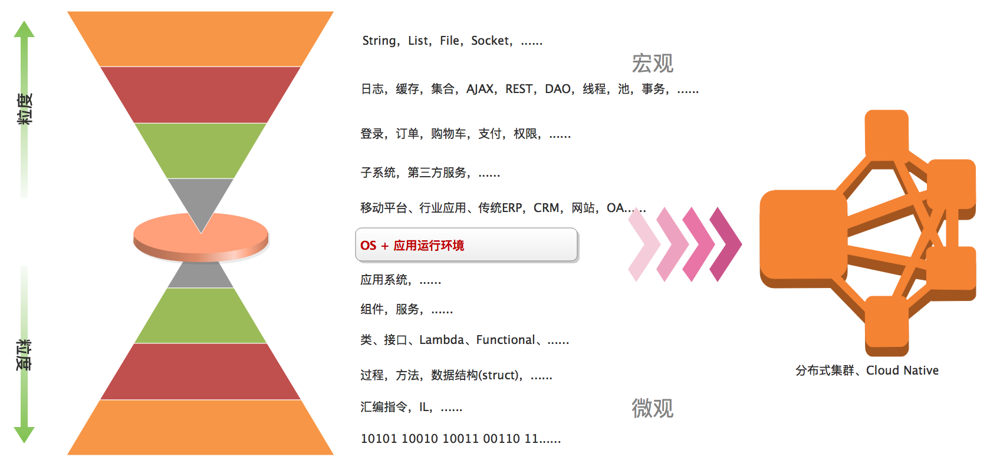</p><p>&#x5728;&#x6280;&#x672F;&#x65B9;&#x5411;&#x4E0A;&#xFF0C;&#x968F;&#x7740;&#x8F6F;&#x786C;&#x4EF6;&#x6280;&#x672F;&#x7684;&#x4E0D;&#x65AD;&#x53D1;&#x5C55;&#xFF0C;&#x4FE1;&#x606F;&#x6280;&#x672F;&#x5728;&#x751F;&#x4EA7;&#x6D3B;&#x52A8;&#x4E2D;&#x7684;&#x4E0D;&#x65AD;&#x6DF1;&#x5316;&#x5E94;&#x7528;&#xFF0C;&#x6280;&#x672F;&#x5B9E;&#x8DF5;&#x79EF;&#x7D2F;&#x4E0D;&#x65AD;&#x63D0;&#x9AD8;&#xFF0C;&#x6280;&#x672F;&#x62BD;&#x8C61;&#x4E0D;&#x65AD;&#x5B8C;&#x5584;&#xFF0C; &#x6280;&#x672F;&#x5173;&#x6CE8;&#x70B9;&#x7684;&#x5C42;&#x6B21;&#x4E5F;&#x4E0D;&#x65AD;&#x63D0;&#x9AD8;&#x3002;</p><p>&#x4ECE;&#x6700;&#x521D;&#x7684;&#x4E8C;&#x8FDB;&#x5236;&#x6307;&#x4EE4;&#xFF0C;&#x7ECF;&#x8FC7;&#x62BD;&#x8C61;&#x63D0;&#x5347;&#x5230;&#x6C47;&#x7F16;&#x3001;IL&#xFF0C;&#x518D;&#x8FDB;&#x4E00;&#x6B65;&#x5230;&#x8FBE;&#x4E86;&#x8FC7;&#x7A0B;&#x3001;&#x65B9;&#x6CD5;&#x548C;&#x6570;&#x636E;&#x7ED3;&#x6784;&#xFF1B; &#x968F;&#x7740;&#x62BD;&#x8C61;&#x5C42;&#x6B21;&#x7EE7;&#x7EED;&#x63D0;&#x5347;&#xFF0C;&#x7C92;&#x5EA6;&#x7EE7;&#x7EED;&#x653E;&#x5927;&#xFF0C;&#x53D1;&#x5C55;&#x5230;&#x57FA;&#x4E8E;&#x7C7B;&#x62BD;&#x8C61;&#x548C;&#x63A5;&#x53E3;&#x5B9A;&#x4E49;&#x5951;&#x7EA6;&#x7684;&#x9762;&#x5411;&#x5BF9;&#x8C61;&#x5C42;&#x9762;&#xFF0C;&#x4EBA;&#x4EEC;&#x603B;&#x7ED3;&#x51FA;&#x5404;&#x79CD;&#x8BBE;&#x8BA1;&#x6A21;&#x5F0F;&#xFF1B; &#x5728;&#x5F00;&#x59CB;&#x9762;&#x5411;&#x7EC4;&#x4EF6;&#xFF0C;&#x670D;&#x52A1;&#x7684;&#x8BBE;&#x8BA1;&#x5EFA;&#x6A21;&#x65F6;&#xFF0C;EJB&#x3001;Spring&#x6846;&#x67B6;/IOC&#x5BB9;&#x5668;&#x3001;SOA&#x670D;&#x52A1;&#x7B49;&#x6280;&#x672F;&#x4F53;&#x7CFB;&#x51FA;&#x73B0;&#x5E76;&#x4E3B;&#x5BFC;&#x8FD9;&#x4E00;&#x5C42;&#x9762;&#x3002;</p><p>&#x8FD9;&#x4E00;&#x5207;&#x770B;&#x4E0A;&#x53BB;&#x9610;&#x8FF0;&#x7684;&#x5F88;&#x7C97;&#x7CD9;&#xFF0C;&#x4F46;&#x4ECE;&#x4E2D;&#x4ECD;&#x53EF;&#x4EE5;&#x770B;&#x5230;&#xFF0C;&#x9886;&#x57DF;&#x7814;&#x7A76;&#x7684;&#x7C92;&#x5EA6;&#x662F;&#x4E0D;&#x65AD;&#x653E;&#x5927;&#x7684;&#xFF0C;&#x968F;&#x7740;&#x67D0;&#x4E00;&#x5C42;&#x6B21;&#x7684;&#x7814;&#x7A76;&#x7ECF;&#x8FC7;&#x957F;&#x65F6;&#x95F4;&#x7684;&#x5B9E;&#x8DF5;&#x79EF;&#x7D2F;&#xFF0C;&#x91CF;&#x53D8;&#x5F15;&#x53D1;&#x8D28;&#x53D8;&#xFF0C;&#x5C31;&#x5F00;&#x59CB; &#x5411;&#x66F4;&#x9AD8;&#x4E00;&#x5C42;&#x8FDB;&#x884C;&#x7A81;&#x7834;&#xFF0C;&#x65B0;&#x7684;&#x6280;&#x672F;&#x5F00;&#x59CB;&#x51FA;&#x73B0;&#xFF0C;&#x800C;&#x5BB9;&#x5668;&#x6280;&#x672F;&#xFF0C;&#x6B63;&#x662F;&#x53EF;&#x4EE5;&#x770B;&#x505A;&#x662F;&#x53C8;&#x4E00;&#x6B21;&#x8D28;&#x53D8;&#x7684;&#x7ED3;&#x679C;&#x3002;</p><p>&#x79FB;&#x52A8;&#x4E92;&#x8054;&#x7F51;&#x7684;&#x98DE;&#x901F;&#x53D1;&#x5C55;&#x4F7F;&#x5F97;&#x79FB;&#x52A8;APP&#x6210;&#x4E3A;&#x4E1A;&#x52A1;&#x4EA4;&#x4E92;&#x7684;&#x5165;&#x53E3;&#xFF0C;&#x6D77;&#x91CF;&#x6570;&#x636E;&#x8DE8;&#x8D8A;&#x65F6;&#x7A7A;&#x9650;&#x5236;&#xFF0C;&#x88AB;&#x4E92;&#x8054;&#x7F51;&#x9AD8;&#x901F;&#x516C;&#x8DEF;&#x5FEB;&#x901F;&#x6C47;&#x96C6;&#xFF0C; &#x5355;&#x4E00;&#x7CFB;&#x7EDF;&#x7684;&#x670D;&#x52A1;&#x518D;&#x4E5F;&#x65E0;&#x6CD5;&#x6EE1;&#x8DB3;&#x5904;&#x7406;&#x6027;&#x80FD;&#x8981;&#x6C42;&#xFF0C;&#x4EBA;&#x4EEC;&#x5F00;&#x59CB;&#x5BFB;&#x627E;&#x65B0;&#x7684;&#x66FF;&#x4EE3;&#x65B9;&#x6848;&#xFF0C;&#x5728;&#x4E0D;&#x65AD;&#x7684;&#x63A2;&#x7D22;&#xFF0C;&#x7814;&#x7A76;&#xFF0C;&#x5B9E;&#x8DF5;&#x548C;&#x4FEE;&#x6B63;&#x8FC7;&#x7A0B;&#x4E2D;&#xFF0C;&#x5206;&#x5E03;&#x5F0F;&#x96C6;&#x7FA4;&#x3001;&#x5FAE;&#x670D;&#x52A1;&#x8BBE;&#x8BA1;&#x7406;&#x8BBA;&#x4E0E;&#x5B9E;&#x8DF5;&#x9010;&#x6E10;&#x6210;&#x719F;&#xFF0C;&#x4E91;&#x8BA1;&#x7B97;&#x3001;&#x5927;&#x6570;&#x636E;&#x5904;&#x7406;&#x5F00;&#x59CB;&#x4E3B;&#x5BFC;&#x5F53;&#x524D;&#x6280;&#x672F;&#x6F6E;&#x6D41;&#xFF0C;&#x8FD9;&#x4E5F;&#x6210;&#x4E3A;&#x5BB9;&#x5668;&#x6280;&#x672F;&#x5F97;&#x4EE5;&#x6210;&#x957F;&#x7684;&#x571F;&#x58E4;&#x3002;</p><h3 id="&#x5FAE;&#x670D;&#x52A1;">&#x5FAE;&#x670D;&#x52A1;</h3><p>&#x4E1A;&#x52A1;&#x7CFB;&#x7EDF;&#x968F;&#x7740;&#x5355;&#x673A;&#x5E94;&#x7528;&#xFF0C;&#x5185;&#x90E8;&#x4E92;&#x8054;&#x5230;INTERNET&#xFF0C;&#x79FB;&#x52A8;&#x4E92;&#x8054;&#xFF0C;&#x5355;&#x4E00;&#x8FDB;&#x7A0B;&#x4E2D;&#x627F;&#x8F7D;&#x6240;&#x6709;&#x529F;&#x80FD;&#x7684;&#x6280;&#x672F;&#x67B6;&#x6784;&#x88AB;&#x590D;&#x6742;&#x5EA6;&#xFF0C;&#x53EF;&#x7EF4;&#x62A4;&#x6027;&#x548C;&#x6D77;&#x91CF;&#x7528;&#x6237;&#x5E26;&#x6765;&#x7684;&#x8D1F;&#x8F7D;&#x538B;&#x529B;&#x6240;&#x51FB;&#x6E83;&#x3002;&#x5E94;&#x5BF9;&#x4E4B;&#x6CD5;&#x5C31;&#x662F;&#x62C6;&#x5206;&#xFF0C;&#x5982;&#x4F55;&#x62C6;&#x5206;&#xFF0C;&#x4F55;&#x5904;&#x7740;&#x624B;&#xFF0C;&#x600E;&#x4E48;&#x63A7;&#x5236;&#xFF0C;&#x5E26;&#x6765;&#x54EA;&#x4E9B;&#x65B0;&#x7684;&#x95EE;&#x9898;&#xFF0C;&#x4E0B;&#x9762;&#x6211;&#x4EEC;&#x4ECE;&#x4E00;&#x4E2A;&#x5178;&#x578B;&#x7684;&#x5E94;&#x7528;&#x7CFB;&#x7EDF;&#x8FDB;&#x884C;&#x5206;&#x6790;&#x3002;</p><p>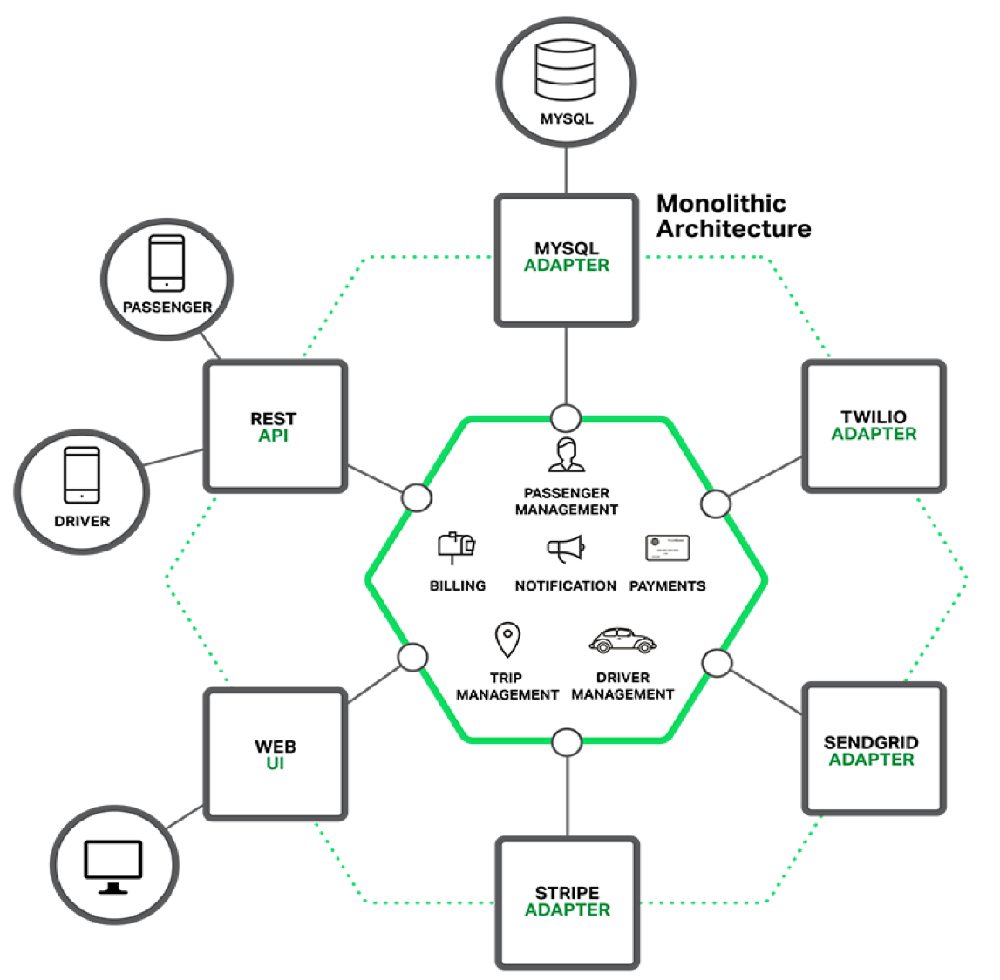</p><p>&#x4E0A;&#x56FE;&#x662F;&#x4E00;&#x4E2A;&#x5178;&#x578B;&#x7684;&#x5E94;&#x7528;&#x7CFB;&#x7EDF;&#xFF0C;&#x5B83;&#x901A;&#x5E38;&#x9700;&#x8981;&#x4E3A;&#x7528;&#x6237;&#x63D0;&#x4F9B;&#x5916;&#x90E8;&#x8BBF;&#x95EE;&#x63A5;&#x53E3;&#xFF0C;&#x5904;&#x7406;&#x5185;&#x90E8;&#x5404;&#x79CD;&#x4E1A;&#x52A1;&#x903B;&#x8F91;&#xFF0C;&#x5C06;&#x6570;&#x636E;&#x5B58;&#x50A8;&#x5230;&#x6570;&#x636E;&#x5E93;&#x7CFB;&#x7EDF;&#xFF0C;&#x5728;&#x5904;&#x7406;&#x4E1A;&#x52A1;&#x7684;&#x8FC7;&#x7A0B;&#x4E2D;&#xFF0C;&#x7CFB;&#x7EDF;&#x53EF;&#x80FD;&#x9700;&#x8981;&#x4E0E;&#x7B2C;&#x4E09;&#x65B9;&#x7CFB;&#x7EDF;&#x6216;&#x8BBE;&#x5907;&#x4EA4;&#x6362;&#x6570;&#x636E;&#xFF0C;&#x5E76;&#x4E14;&#x4E3A;&#x7BA1;&#x7406;&#x7528;&#x6237;&#x63D0;&#x4F9B;WEB&#x7BA1;&#x7406;&#x5165;&#x53E3;&#x3002;</p><p>&#x5982;&#x4F55;&#x5BF9;&#x4E0A;&#x8FF0;&#x5E94;&#x7528;&#x7CFB;&#x7EDF;&#x8FDB;&#x884C;&#x62C6;&#x5206;&#xFF1F;&#x901A;&#x5E38;&#x5178;&#x578B;&#x7684;&#x65B9;&#x6CD5;&#x662F;&#x6309;&#x4E1A;&#x52A1;&#x529F;&#x80FD;&#x3002;&#x5F53;&#x7136;&#xFF0C;&#x65E2;&#x53EF;&#x4EE5;&#x7EB5;&#x5411;&#x62C6;&#x5206;&#x4E5F;&#x53EF;&#x4EE5;&#x6A2A;&#x5411;&#x62C6;&#x5206;&#xFF0C;&#x6216;&#x8005;&#x4E24;&#x8005;&#x7ED3;&#x5408;&#x3002;&#x5728;&#x5B9E;&#x8DF5;&#x8FC7;&#x7A0B;&#x4E2D;&#xFF0C;&#x4ECD;&#x9700;&#x8981;&#x7ED3;&#x5408;&#x9879;&#x76EE;&#x5B9E;&#x9645;&#x60C5;&#x51B5;&#x5177;&#x4F53;&#x628A;&#x63E1;&#x3002;</p><p>&#x4E0B;&#x56FE;&#x662F;&#x6309;&#x529F;&#x80FD;&#x62C6;&#x5206;&#x5FAE;&#x670D;&#x52A1;&#x540E;&#x7684;&#x7CFB;&#x7EDF;&#x7ED3;&#x6784;&#x56FE;&#xFF0C;&#x4ECE;&#x56FE;&#x4E0A;&#x53EF;&#x4EE5;&#x770B;&#x51FA;&#xFF0C;&#x57FA;&#x4E8E;&#x5FAE;&#x670D;&#x52A1;&#x7684;&#x65B0;&#x7CFB;&#x7EDF;&#x529F;&#x80FD;&#x6A21;&#x5757;&#x7ED3;&#x6784;&#x6E05;&#x6670;&#xFF0C;&#x4F46;&#x989D;&#x5916;&#x5F15;&#x5165;&#x4E86;&#x670D;&#x52A1;&#x95F4;&#x8C03;&#x7528;&#x7684;&#x590D;&#x6742;&#x6027;&#xFF0C;&#x540C;&#x65F6;&#xFF0C;&#x4E5F;&#x9700;&#x8981;&#x4E00;&#x4E2A;&#x65B0;&#x7684;API Gateway&#x6765;&#x805A;&#x5408;&#x5BF9;&#x5916;&#x63D0;&#x4F9B;&#x670D;&#x52A1;&#x7684;&#x63A5;&#x53E3;&#x3002;
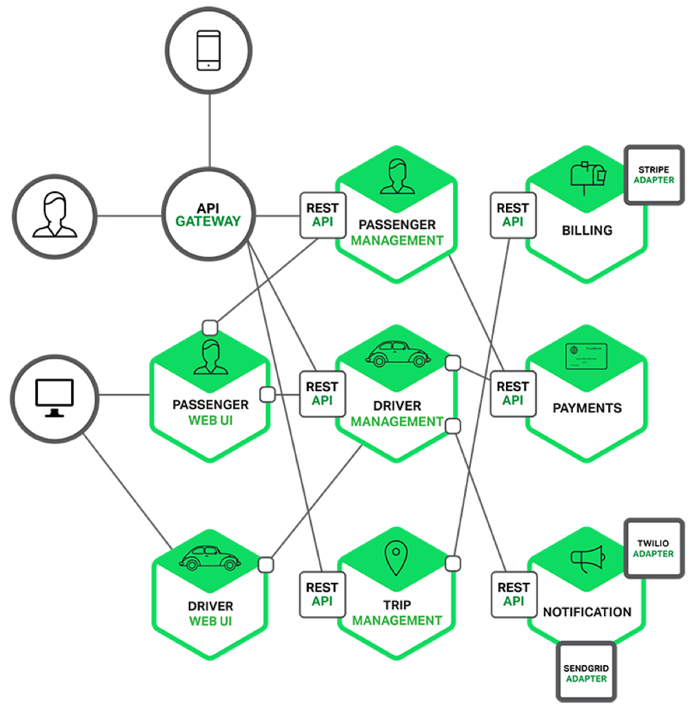</p><p>&#x5FAE;&#x670D;&#x52A1;&#x771F;&#x7684;&#x5982;&#x6B64;&#x7B80;&#x5355;&#xFF1F;&#x7B54;&#x6848;&#x5F53;&#x7136;&#x4E0D;&#x662F;&#x3002;&#x4E00;&#x79CD;&#x65B0;&#x7684;&#x89E3;&#x51B3;&#x65B9;&#x6848;&#x9700;&#x8981;&#x5728;&#x5404;&#x4E2A;&#x5C42;&#x9762;&#xFF0C;&#x5404;&#x4E2A;&#x89D2;&#x5EA6;&#x505A;&#x51FA;&#x6743;&#x8861;&#x548C;&#x51B3;&#x7B56;&#xFF0C;&#x4E0B;&#x9762;&#x6211;&#x4EEC;&#x4EE5;&#x4E00;&#x4E2A;&#x670D;&#x52A1;&#x5355;&#x5143;&#x4E3A;&#x89C6;&#x89D2;&#xFF0C;&#x770B;&#x4E00;&#x4E0B;&#x9700;&#x8981;&#x9762;&#x5BF9;&#x54EA;&#x4E9B;&#x95EE;&#x9898;&#xFF1A;</p><p>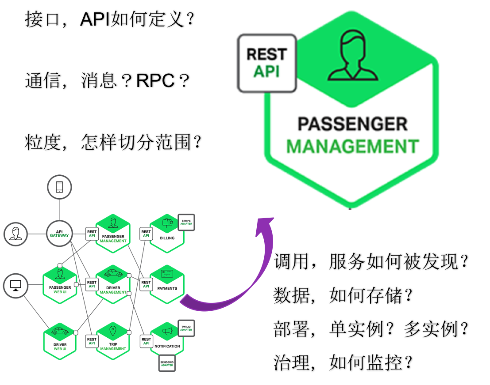</p><p>&#x5982;&#x56FE;&#x4E2D;&#x6240;&#x793A;&#xFF0C;&#x5BF9;&#x4E8E;&#x4E00;&#x4E2A;&#x5FAE;&#x670D;&#x52A1;&#x5B9E;&#x4F8B;&#xFF0C;&#x6211;&#x4EEC;&#x81F3;&#x5C11;&#x9700;&#x8981;&#x8003;&#x8651;&#x4EE5;&#x4E0B;&#x95EE;&#x9898;&#xFF1A;</p><ul><li><p>&#x63A5;&#x53E3;&#x5982;&#x4F55;&#x5B9A;&#x4E49;&#xFF1F;&#x91C7;&#x7528;REST&#x8FD8;&#x662F;&#x5176;&#x4ED6;&#xFF1F;</p></li>
<li><p>&#x91C7;&#x7528;&#x4F55;&#x79CD;&#x901A;&#x4FE1;&#x6A21;&#x578B;&#xFF1F;RPC&#xFF0C;&#x6D88;&#x606F;&#xFF0C;&#x540C;&#x6B65;/&#x5F02;&#x6B65;&#xFF0C;&#x54CD;&#x5E94;&#x5F0F;&#x8FD8;&#x662F;&#x4E8B;&#x4EF6;&#x9A71;&#x52A8;&#xFF1F;</p></li>
<li><p>&#x670D;&#x52A1;&#x662F;&#x6309;&#x4F55;&#x79CD;&#x7C92;&#x5EA6;&#x5207;&#x5206;&#x7684;&#xFF1F;&#x7EB5;&#x5411;&#xFF0C;&#x6A2A;&#x5411;&#xFF0C;&#x6709;&#x65E0;&#x5176;&#x4ED6;&#x66F4;&#x597D;&#x7684;&#x65B9;&#x6848;&#xFF1F;</p></li>
<li><p>&#x670D;&#x52A1;&#x5982;&#x4F55;&#x88AB;&#x8C03;&#x7528;&#xFF1F;&#x5176;&#x4ED6;&#x670D;&#x52A1;&#x5982;&#x4F55;&#x53D1;&#x73B0;&#x6B64;&#x670D;&#x52A1;&#x7684;&#x5B58;&#x5728;&#xFF1F;&#x5185;&#x90E8;&#x670D;&#x52A1;&#x548C;&#x5916;&#x90E8;&#x670D;&#x52A1;&#x5982;&#x4F55;&#x533A;&#x5206;&#xFF1F;</p></li>
<li><p>&#x670D;&#x52A1;&#x5904;&#x7406;&#x7684;&#x6570;&#x636E;&#x5982;&#x4F55;&#x5B58;&#x50A8;&#xFF1F;</p></li>
<li><p>&#x670D;&#x52A1;&#x5982;&#x4F55;&#x90E8;&#x7F72;&#xFF1F;&#x5355;&#x5B9E;&#x4F8B;&#xFF0C;&#x591A;&#x5B9E;&#x4F8B;&#xFF0C;&#x5982;&#x4F55;&#x652F;&#x6301;&#x8D1F;&#x8F7D;&#x5747;&#x8861;&#xFF1F;</p></li>
<li><p>&#x670D;&#x52A1;&#x5982;&#x4F55;&#x6CBB;&#x7406;&#xFF1F;&#x662F;&#x5426;&#x516C;&#x5F00;&#x4E86;&#x6D4B;&#x91CF;&#x6307;&#x6807;&#xFF0C;&#x600E;&#x4E48;&#x76D1;&#x63A7;&#x8FD9;&#x4E9B;&#x6307;&#x6807;&#xFF1F;&#x65E5;&#x5FD7;&#x662F;&#x5426;&#x9700;&#x8981;&#x5F52;&#x96C6;&#xFF1F;&#x5982;&#x4F55;&#x63A7;&#x5236;&#x670D;&#x52A1;&#x7684;&#x5B89;&#x5168;&#xFF1F;</p></li></ul>
<p>&#x9488;&#x5BF9;&#x8FD9;&#x4E9B;&#x95EE;&#x9898;&#xFF0C;&#x6BCF;&#x4E00;&#x4E2A;&#x90FD;&#x6709;&#x591A;&#x79CD;&#x4E0D;&#x540C;&#x7684;&#x5019;&#x9009;&#x65B9;&#x6848;&#xFF0C;&#x6B64;&#x5904;&#x4E0D;&#x518D;&#x5C55;&#x5F00;&#x8BE6;&#x7EC6;&#x7684;&#x63A2;&#x8BA8;&#x3002;</p><h3 id="&#x5BB9;&#x5668;">&#x5BB9;&#x5668;</h3><p>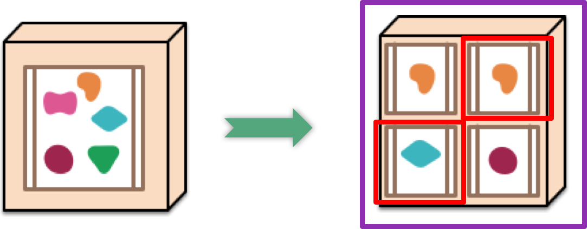</p><p>&#x4F20;&#x7EDF;&#x7684;&#x5355;&#x8FDB;&#x7A0B;&#x5E94;&#x7528;&#x7CFB;&#x7EDF;&#x5728;&#x90E8;&#x7F72;&#x65F6;&#x901A;&#x5E38;&#x4F1A;&#x72EC;&#x5360;&#x7269;&#x7406;&#x4E3B;&#x673A;&#x7684;&#x6240;&#x6709;&#x786C;&#x4EF6;&#x8D44;&#x6E90;&#x3002;&#x5728;&#x5E94;&#x7528;&#x7CFB;&#x7EDF;&#x88AB;&#x62C6;&#x5206;&#x6210;&#x5FAE;&#x670D;&#x52A1;&#x540E;&#xFF0C;&#x5355;&#x4E2A;&#x670D;&#x52A1;&#x5360;&#x7528;&#x6574;&#x673A;&#x7269;&#x7406;&#x8D44;&#x6E90;&#x4F1A;&#x9020;&#x6210;&#x5F88;&#x5927;&#x7684;&#x95F2;&#x7F6E;&#x6D6A;&#x8D39;&#xFF0C;&#x4E00;&#x79CD;&#x65B9;&#x6848;&#x662F;&#x901A;&#x8FC7;&#x865A;&#x62DF;&#x673A;&#x8FDB;&#x884C;&#x9694;&#x79BB;&#xFF0C;&#x5F53;&#x90E8;&#x7F72;&#x6570;&#x5341;&#x751A;&#x81F3;&#x4E0A;&#x767E;&#x4E2A;&#x865A;&#x62DF;&#x673A;&#x65F6;&#xFF0C;&#x865A;&#x62DF;&#x673A;&#x672C;&#x8EAB;&#x7684;&#x8D44;&#x6E90;&#x6D88;&#x8017;&#x4E5F;&#x4F1A;&#x9020;&#x6210;&#x5DE8;&#x5927;&#x7684;&#x8D44;&#x6E90;&#x6D6A;&#x8D39;&#x3002;</p><p>&#x5F53;&#x524D;&#xFF0C;&#x89E3;&#x51B3;&#x5FAE;&#x670D;&#x52A1;&#x4E4B;&#x95F4;&#x8D44;&#x6E90;&#x7ADE;&#x4E89;&#x7684;&#x6700;&#x4F73;&#x65B9;&#x6848;&#x662F;&#x901A;&#x8FC7;&#x5BB9;&#x5668;&#x9694;&#x79BB;&#x3002;&#x76F8;&#x6BD4;&#x4E8E;&#x865A;&#x62DF;&#x673A;&#x6280;&#x672F;&#xFF0C;&#x5BB9;&#x5668;&#x6280;&#x672F;&#x7684;&#x4F18;&#x52BF;&#x5728;&#x4E8E;&#x5B83;&#x5305;&#x542B;&#x5E94;&#x7528;&#x53CA;&#x5176;&#x6240;&#x6709;&#x4F9D;&#x8D56;&#xFF0C;&#x4E0E;&#x5176;&#x5B83;&#x5BB9;&#x5668;&#x5171;&#x4EAB;&#x7CFB;&#x7EDF;&#x5185;&#x6838;&#xFF0C;&#x5728;&#x4E3B;&#x673A;&#x7CFB;&#x7EDF;&#x7684;&#x7528;&#x6237;&#x7A7A;&#x95F4;&#x5185;&#x4EE5;&#x9694;&#x79BB;&#x8FDB;&#x7A0B;&#x65B9;&#x5F0F;&#x8FD0;&#x884C;&#xFF0C;&#x5E76;&#x4E14;&#x4EC5;&#x4F9D;&#x8D56;&#x64CD;&#x4F5C;&#x7CFB;&#x7EDF;&#xFF0C;&#x4E0D;&#x518D;&#x4F9D;&#x8D56;&#x5176;&#x4ED6;&#x57FA;&#x7840;&#x8BBE;&#x65BD;&#x3002;&#x800C;Docker&#x5DF2;&#x7ECF;&#x6210;&#x4E3A;&#x5BB9;&#x5668;&#x6280;&#x672F;&#x7684;&#x4E8B;&#x5B9E;&#x6807;&#x51C6;&#x3002;</p><p>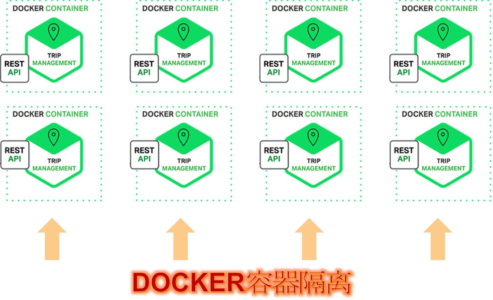</p><h3 id="dcos">DC/OS</h3><p>&#x968F;&#x7740;&#x4E1A;&#x52A1;&#x7CFB;&#x7EDF;&#x89C4;&#x6A21;&#x7684;&#x4E0D;&#x65AD;&#x6269;&#x5927;&#xFF0C;&#x5FAE;&#x670D;&#x52A1;&#x6570;&#x91CF;&#x8FC5;&#x901F;&#x589E;&#x52A0;&#xFF0C;&#x800C;&#x4E3A;&#x4E86;&#x786E;&#x4FDD;&#x670D;&#x52A1;&#x7684;&#x53EF;&#x9760;&#x6027;&#xFF0C;&#x5355;&#x4E00;&#x670D;&#x52A1;&#x9700;&#x8981;&#x591A;&#x5B9E;&#x4F8B;&#x63D0;&#x4F9B;&#x5BB9;&#x9519;&#x548C;&#x8D1F;&#x8F7D;&#xFF0C;&#x6574;&#x4E2A;&#x7CFB;&#x7EDF;&#x7684;&#x670D;&#x52A1;&#x5B9E;&#x4F8B;&#x4EE5;&#x4E58;&#x79EF;&#x7684;&#x89C4;&#x6A21;&#x6269;&#x5F20;&#xFF0C;&#x5F88;&#x5FEB;&#x670D;&#x52A1;&#x5173;&#x7CFB;&#x5C06;&#x53D8;&#x5F97;&#x9519;&#x7EFC;&#x590D;&#x6742;&#x800C;&#x96BE;&#x4EE5;&#x7EF4;&#x62A4;&#xFF0C;&#x5982;&#x4E0B;&#x56FE;&#x6240;&#x793A;&#xFF1A;</p><p>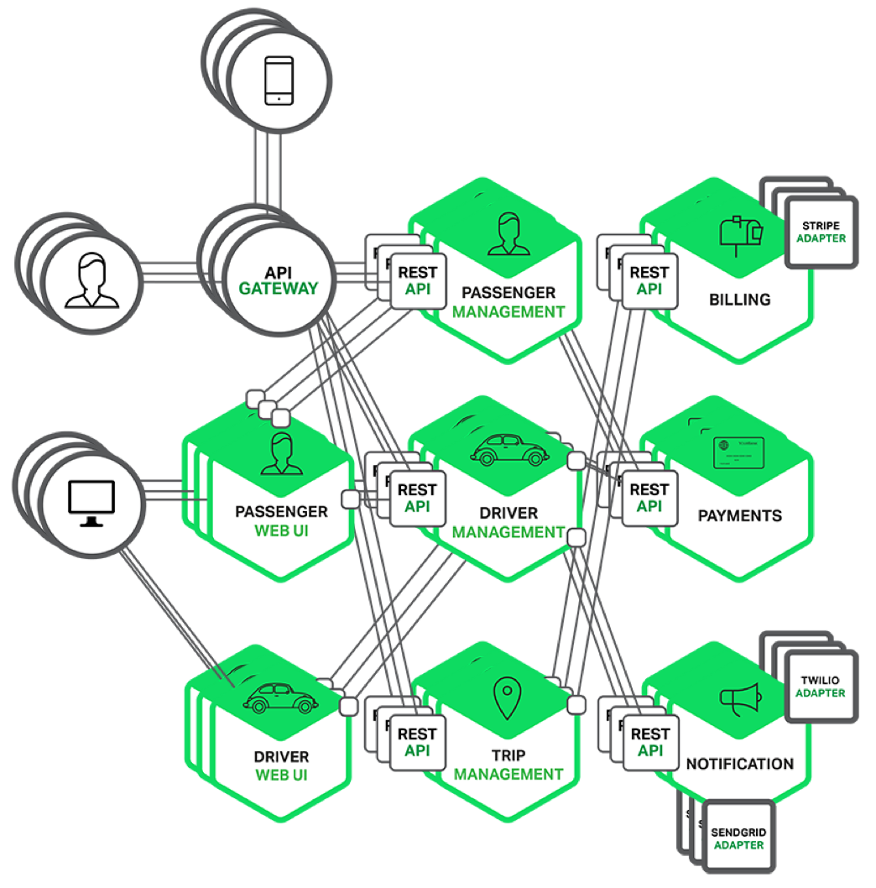</p><p>&#x5982;&#x4F55;&#x7BA1;&#x7406;&#x3001;&#x8C03;&#x5EA6;&#x548C;&#x8FD0;&#x7EF4;&#x5982;&#x6B64;&#x590D;&#x6742;&#x7684;&#x670D;&#x52A1;&#x62D3;&#x6251;&#xFF1F;&#x8FD9;&#x5BF9;&#x67B6;&#x6784;&#x8BBE;&#x8BA1;&#x8005;&#x6765;&#x8BF4;&#x662F;&#x4E00;&#x4E2A;&#x5DE8;&#x5927;&#x7684;&#x6311;&#x6218;&#x3002;</p><p>&#x4E0B;&#x9762;&#xFF0C;&#x8BA9;&#x6211;&#x4EEC;&#x5148;&#x629B;&#x5374;&#x670D;&#x52A1;&#x5185;&#x90E8;&#x53CA;&#x670D;&#x52A1;&#x4E4B;&#x95F4;&#x590D;&#x6742;&#x7684;&#x4E1A;&#x52A1;&#x903B;&#x8F91;&#x5173;&#x7CFB;&#xFF0C;&#x89C6;&#x91CE;&#x4ECE;&#x9AD8;&#x7A7A;&#x6295;&#x5C04;&#xFF0C;&#x6211;&#x4EEC;&#x4F1A;&#x770B;&#x5230;&#x4E0B;&#x9762;&#x8FD9;&#x5F20;&#x56FE;&#x8C31;&#x3002;&#x4F17;&#x591A;&#x670D;&#x52A1;&#x5B9E;&#x4F8B;&#x88AB;&#x6DF7;&#x6742;&#x5B89;&#x7F6E;&#x5728;&#x4E00;&#x7EC4;&#x786C;&#x4EF6;&#x96C6;&#x7FA4;&#x4E2D;&#x3002;</p><p>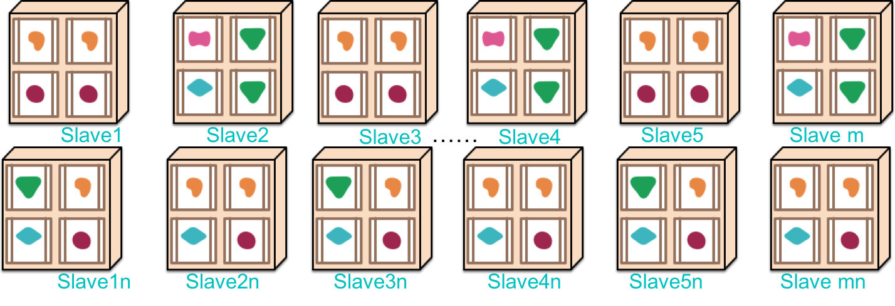</p><p>&#x5982;&#x679C;&#x670D;&#x52A1;&#x5B9E;&#x4F8B;&#x6269;&#x5F20;&#x6240;&#x5E26;&#x6765;&#x7684;&#x95EE;&#x9898;&#xFF0C;&#x786C;&#x4EF6;&#x96C6;&#x7FA4;&#x7684;&#x6269;&#x5F20;&#x540C;&#x6837;&#x9700;&#x8981;&#x7BA1;&#x7406;&#xFF0C;&#x56E0;&#x6B64;&#x6211;&#x4EEC;&#x9700;&#x8981;&#x589E;&#x52A0;&#x4E00;&#x4E2A;&#x7BA1;&#x7406;&#x7684;&#x4E3B;&#x8282;&#x70B9;&#xFF0C;&#x901A;&#x8FC7;&#x5B83;&#x6211;&#x4EEC;&#x53EF;&#x4EE5;&#x67E5;&#x770B;&#x4E3B;&#x673A;&#x8282;&#x70B9;&#x7684;&#x72B6;&#x6001;&#xFF0C;&#x4E3B;&#x673A;&#x4E0A;&#x5FAE;&#x670D;&#x52A1;&#x7684;&#x90E8;&#x7F72;&#x4FE1;&#x606F;&#x4EE5;&#x53CA;&#x5FAE;&#x670D;&#x52A1;&#x7684;&#x72B6;&#x6001;&#x4E0E;&#x7BA1;&#x7406;&#x3002;&#x4E8E;&#x662F;&#x6211;&#x4EEC;&#x6709;&#x4E86;&#x5982;&#x4E0B;&#x7684;&#x65B9;&#x6848;&#xFF1A;</p><p>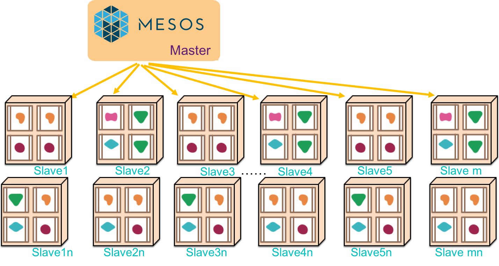</p><p>&#x5728;&#x8FD9;&#x79CD;&#x62D3;&#x6251;&#x4E0B;&#xFF0C;&#x5355;&#x4E2A;Master&#x4E3B;&#x8282;&#x70B9;&#x662F;&#x65E0;&#x6CD5;&#x627F;&#x8F7D;&#x751F;&#x6210;&#x73AF;&#x5883;&#x5BF9;&#x9AD8;&#x53EF;&#x9760;&#x6027;&#x7684;&#x8981;&#x6C42;&#x7684;&#xFF0C;&#x56E0;&#x6B64;&#xFF0C;&#x6211;&#x4EEC;&#x9700;&#x8981;&#x4E3A;&#x4E3B;&#x8282;&#x70B9;&#x6DFB;&#x52A0;HA&#xFF0C;&#x5F53;&#x524D;&#x63D0;&#x4F9B;&#x670D;&#x52A1;&#x53D1;&#x73B0;&#xFF0C;&#x4E00;&#x81F4;&#x6027;&#x548C;Leader&#x9009;&#x4E3E;&#x7684;&#x57FA;&#x7840;&#x670D;&#x52A1;&#x6709;zookeeper&#xFF0C;etcd&#xFF0C;consul&#x7B49;&#xFF0C;&#x8FD9;&#x91CC;&#x6682;&#x4E0D;&#x7BA1;&#x8FD9;&#x4E9B;&#x670D;&#x52A1;&#x7684;&#x5DEE;&#x522B;&#xFF0C;&#x6211;&#x4EEC;&#x91C7;&#x7528;zookeeper&#x5B9E;&#x73B0;Master&#x4E3B;&#x8282;&#x70B9;&#x7684;Quorum&#xFF0C;&#x5982;&#x4E0B;&#x56FE;&#x6240;&#x793A;&#xFF1A;</p><p>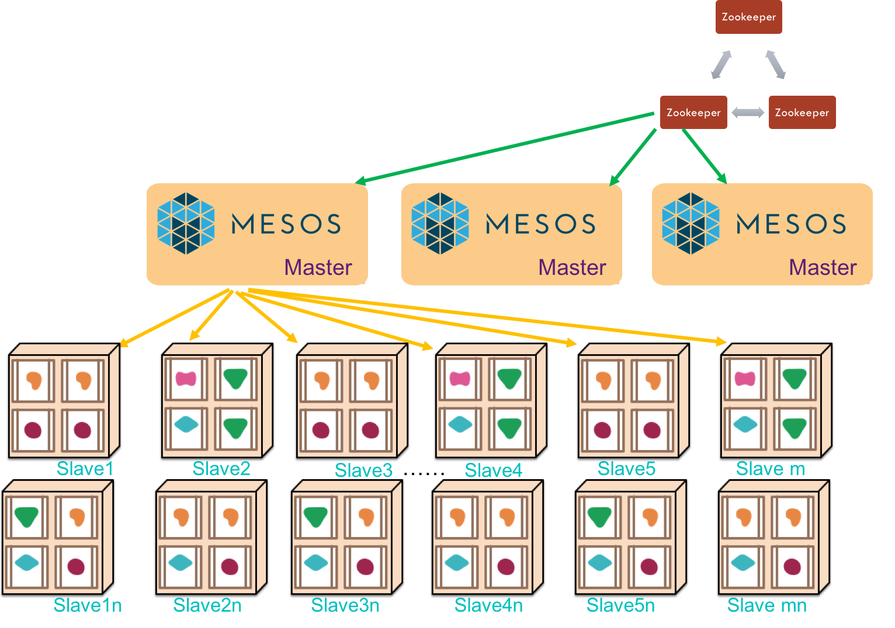</p><p>&#x4ECE;&#x4E0A;&#x8FF0;&#x67B6;&#x6784;&#x53EF;&#x4EE5;&#x770B;&#x51FA;&#xFF0C;&#x4E3B;&#x8282;&#x70B9;&#x5BF9;&#x670D;&#x52A1;&#x8282;&#x70B9;&#x4E3B;&#x673A;&#x96C6;&#x7FA4;&#x4E86;&#x5982;&#x6307;&#x638C;&#xFF0C;&#x56E0;&#x6B64;&#x5B83;&#x53EF;&#x4EE5;&#x53CA;&#x65F6;&#x638C;&#x63A7;&#x6240;&#x6709;&#x670D;&#x52A1;&#x8282;&#x70B9;&#x7684;&#x8D44;&#x6E90;&#x72B6;&#x6001;&#xFF0C;&#x5E76;&#x4E0E;Slave&#x4E3B;&#x673A;&#x8282;&#x70B9;&#x4E92;&#x901A;&#x6D88;&#x606F;&#x3002;&#x65E2;&#x7136;&#x5982;&#x6B64;&#xFF0C;&#x6211;&#x4EEC;&#x7684;&#x60F3;&#x6CD5;&#x53EF;&#x4EE5;&#x66F4;&#x8FDB;&#x4E00;&#x6B65;&#xFF0C;&#x901A;&#x8FC7;&#x4E3B;&#x8282;&#x70B9;&#x4E0E;Slave&#x8282;&#x70B9;&#x4E4B;&#x95F4;&#x7684;&#x901A;&#x9053;&#xFF0C;&#x6211;&#x4EEC;&#x53EF;&#x4EE5;&#x5C06;&#x670D;&#x52A1;&#x90E8;&#x7F72;&#x5230;&#x5404;&#x4E2A;Slave&#x8282;&#x70B9;&#x3002;</p><p>&#x5982;&#x4F55;&#x90E8;&#x7F72;&#x6709;&#x591A;&#x79CD;&#x5B9E;&#x73B0;&#x7B56;&#x7565;&#xFF0C;&#x5176;&#x4E2D;&#x7684;&#x4E00;&#x79CD;&#x662F;&#x7531;&#x4E3B;&#x8282;&#x70B9;&#x544A;&#x8BC9;&#x5E94;&#x7528;&#x670D;&#x52A1;&#x5F53;&#x524D;&#x6709;&#x591A;&#x5C11;&#x8D44;&#x6E90;&#x53EF;&#x7528;&#xFF0C;&#x7531;&#x5E94;&#x7528;&#x670D;&#x52A1;&#x6839;&#x636E;&#x81EA;&#x8EAB;&#x7279;&#x70B9;&#x51B3;&#x5B9A;&#x9700;&#x8981;&#x591A;&#x5C11;&#x8D44;&#x6E90;&#xFF0C;&#x5982;&#x679C;&#x8D44;&#x6E90;&#x9700;&#x6C42;&#x6EE1;&#x8DB3;&#xFF0C;&#x5E94;&#x7528;&#x670D;&#x52A1;&#x9501;&#x5B9A;&#x8D44;&#x6E90;&#xFF0C;&#x5E76;&#x901A;&#x8FC7;Master&#x4E3B;&#x8282;&#x70B9;&#x5C06;&#x670D;&#x52A1;&#x5305;&#x5206;&#x53D1;&#x5230;&#x63D0;&#x4F9B;&#x8D44;&#x6E90;&#x7684;Slave&#x4E3B;&#x673A;&#xFF0C;&#x5E76;&#x5728;Slave&#x4E3B;&#x673A;&#x4E0A;&#x542F;&#x52A8;&#x670D;&#x52A1;&#x3002;&#x8FD9;&#x91CC;&#x6709;&#x4E24;&#x4E2A;&#x6982;&#x5FF5;&#xFF1A;&#x4E0E;Master&#x4E3B;&#x8282;&#x70B9;&#x6C9F;&#x901A;&#x5206;&#x914D;&#x8D44;&#x6E90;&#x7684;&#x79F0;&#x4E3A;&#x8C03;&#x5EA6;&#x5668;&#xFF0C;&#x5728;Slave&#x4E3B;&#x673A;&#x542F;&#x52A8;&#x670D;&#x52A1;&#x7684;&#x79F0;&#x4E3A;&#x6267;&#x884C;&#x5668;&#x3002;</p><p>&#x5982;&#x4E0A;&#x6240;&#x8FF0;&#xFF0C;&#x7ECF;&#x8FC7;Master&#x4E3B;&#x8282;&#x70B9;&#x548C;&#x5E94;&#x7528;&#x8C03;&#x5EA6;&#x5668;&#x7684;&#x534F;&#x8C03;&#x914D;&#x5408;&#xFF0C;&#x670D;&#x52A1;&#x53EF;&#x4EE5;&#x52A8;&#x6001;&#x90E8;&#x7F72;&#x5230;&#x4E3B;&#x673A;&#x96C6;&#x7FA4;&#x4E2D;&#xFF0C;&#x800C;&#x4E0D;&#x9700;&#x8981;&#x76F4;&#x63A5;&#x4E00;&#x4E2A;&#x4E00;&#x4E2A;&#x670D;&#x52A1;&#x90E8;&#x7F72;&#x3002;&#x8FD9;&#x91CC;&#x4E2D;&#x8C03;&#x5EA6;&#x7B56;&#x7565;&#x79F0;&#x4E4B;&#x4E3A;&#x201C;&#x4E24;&#x7EA7;&#x8C03;&#x5EA6;&#x201D;&#x3002;</p><p>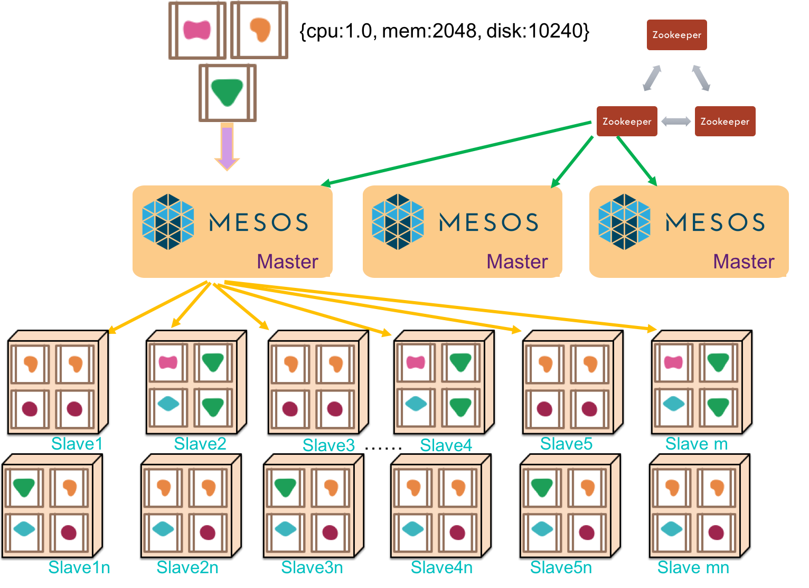</p><p>&#x524D;&#x8FF0;&#x8FC7;&#x7A0B;&#x5B8C;&#x6210;&#x4E86;&#x670D;&#x52A1;&#x5728;&#x96C6;&#x7FA4;&#x4E2D;&#x52A8;&#x6001;&#x90E8;&#x7F72;&#xFF0C;&#x8FD9;&#x4E9B;&#x670D;&#x52A1;&#x6700;&#x7EC8;&#x662F;&#x8981;&#x5411;&#x5916;&#x90E8;&#x7528;&#x6237;&#x63D0;&#x4F9B;&#x670D;&#x52A1;&#x7684;&#xFF0C;&#x56E0;&#x6B64;&#x9700;&#x8981;&#x6709;&#x7F51;&#x7EDC;&#x5165;&#x53E3;&#x3002;&#x5916;&#x90E8;&#x7528;&#x6237;&#x5982;&#x4F55;&#x4ECE;INTERNET&#x8BBF;&#x95EE;&#x5230;&#x6211;&#x4EEC;&#x63D0;&#x4F9B;&#x7684;&#x670D;&#x52A1;&#xFF1F;&#x5E38;&#x7528;&#x7684;&#x89E3;&#x51B3;&#x65B9;&#x6848;&#x662F;&#x4EE5;&#x4E91;&#x7AEF;SLB&#x3001;ELB&#x3001;DNS&#x7B49;&#x4E3A;&#x5165;&#x53E3;&#x63D0;&#x4F9B;&#x63A5;&#x5165;&#x8D1F;&#x8F7D;&#x3002;&#x5728;&#x5185;&#x90E8;&#x96C6;&#x7FA4;&#x4E4B;&#x524D;&#x7528;Nginx&#x3001;HAProxy&#x7B49;&#x63D0;&#x4F9B;&#x5185;&#x90E8;&#x8D1F;&#x8F7D;&#x8C03;&#x5EA6;&#xFF0C;&#x89E3;&#x51B3;&#x65B9;&#x6848;&#x5982;&#x4E0B;&#x56FE;&#x6240;&#x793A;&#xFF1A;</p><p>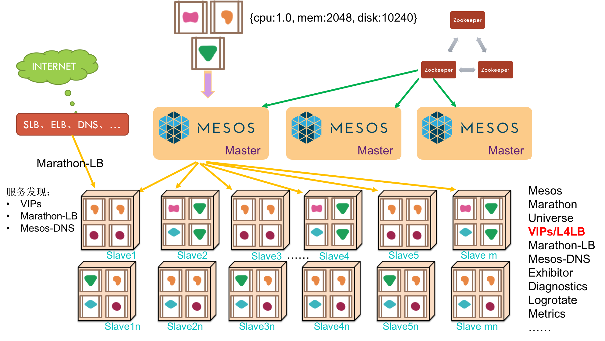</p><p>&#x4E3A;&#x4E86;&#x8FDB;&#x4E00;&#x6B65;&#x63D0;&#x5347;&#x5B89;&#x5168;&#x548C;&#x53EF;&#x63A7;&#x6027;&#xFF0C;&#x6211;&#x4EEC;&#x9700;&#x8981;&#x5C06;&#x5185;&#x90E8;&#x4E3B;&#x673A;&#x96C6;&#x7FA4;&#x4E0E;&#x5916;&#x90E8;INTERNET&#x4E4B;&#x95F4;&#x67B6;&#x8BBE;&#x4E00;&#x5C42;&#x7F13;&#x51B2;&#x533A;&#xFF0C;&#x4F4D;&#x4E8E;&#x7F13;&#x51B2;&#x533A;&#x5185;&#x7684;&#x4E3B;&#x673A;&#x901A;&#x5E38;&#x6709;&#x516C;&#x7F51;IP&#x5730;&#x5740;&#xFF0C;&#x79F0;&#x4E4B;&#x4E3A;Public Agents&#xFF0C;&#x800C;&#x5185;&#x90E8;&#x9694;&#x79BB;&#x533A;&#x5185;&#x7684;&#x4E3B;&#x673A;&#x65E0;&#x6CD5;&#x88AB;&#x5916;&#x90E8;&#x76F4;&#x63A5;&#x8BBF;&#x95EE;&#xFF0C;&#x79F0;&#x4E4B;&#x4E3A;Private Agents&#x3002;&#x8D1F;&#x8D23;&#x5185;&#x90E8;&#x8D1F;&#x8F7D;&#x8C03;&#x5EA6;&#x548C;&#x670D;&#x52A1;&#x53D1;&#x73B0;&#x7684;Nginx&#x548C;HAProxy&#x7B49;&#x901A;&#x5E38;&#x90E8;&#x7F72;&#x5728;&#x7F13;&#x51B2;&#x533A;&#x5185;&#x7684;Public Agents&#x4E0A;&#x3002;&#x56E0;&#x6B64;&#xFF0C;&#x65B0;&#x7684;&#x8C03;&#x6574;&#x65B9;&#x6848;&#x7684;&#x67B6;&#x6784;&#x56FE;&#x5982;&#x4E0B;&#xFF1A;</p><p>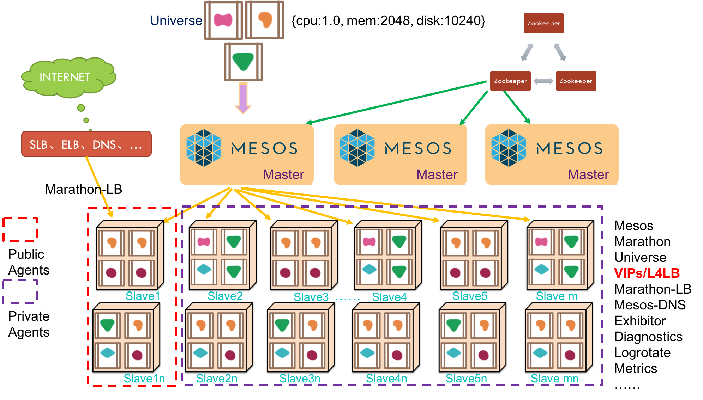</p><p>&#x81F3;&#x6B64;&#xFF0C;&#x6211;&#x4EEC;&#x63ED;&#x5F00;&#x4E86;DC/OS&#x5373;&#x6570;&#x636E;&#x4E2D;&#x5FC3;&#x64CD;&#x4F5C;&#x7CFB;&#x7EDF;&#x7684;&#x9762;&#x7EB1;&#x4E00;&#x89D2;&#x3002;</p><p>DC/OS&#x5373;&#x6570;&#x636E;&#x4E2D;&#x5FC3;&#x64CD;&#x4F5C;&#x7CFB;&#x7EDF;&#xFF0C;&#x662F;&#x4E00;&#x4E2A;&#x67B6;&#x6784;&#x4E8E;&#x73B0;&#x6709;&#x5355;&#x673A;&#x64CD;&#x4F5C;&#x7CFB;&#x7EDF;&#x4E4B;&#x4E0A;&#x4E3A;&#x4E0A;&#x5C42;&#x5E94;&#x7528;&#x63D0;&#x4F9B;CPU&#x3001;&#x5185;&#x5B58;&#x3001;&#x78C1;&#x76D8;&#x548C;&#x7F51;&#x7EDC;&#x7B49;&#x89C4;&#x6A21;&#x5316;&#x96C6;&#x7FA4;&#x8D44;&#x6E90;&#x7684;&#x5206;&#x914D;&#x8C03;&#x5EA6;&#x7684;&#x5206;&#x5E03;&#x5F0F;&#x64CD;&#x4F5C;&#x7CFB;&#x7EDF;&#x3002;DC/OS&#x662F;Mesos&#x3001;Marathon&#x3001;Docker&#x53CA;&#x5176;&#x5B83;&#x76F8;&#x5173;&#x6280;&#x672F;&#x7684;&#x4E00;&#x4E2A;&#x6846;&#x67B6;&#x6574;&#x5408;&#xFF0C;&#x9002;&#x7528;&#x4E8E;&#x5FEB;&#x901F;&#x6784;&#x5EFA;&#x5927;&#x89C4;&#x6A21;&#x5F02;&#x6784;&#x5E94;&#x7528;&#x96C6;&#x7FA4;&#x3002;</p>
                                
                                </section>
                            
    </div>
    <div class="search-results">
        <div class="has-results">
            
            <h1 class="search-results-title"><span class='search-results-count'></span> results matching "<span class='search-query'></span>"</h1>
            <ul class="search-results-list"></ul>
            
        </div>
        <div class="no-results">
            
            <h1 class="search-results-title">No results matching "<span class='search-query'></span>"</h1>
            
        </div>
    </div>
</div>

                        </div>
                    </div>
                
            </div>

            
                
                
                <a href="dcos概览.html" class="navigation navigation-next navigation-unique" aria-label="Next page: DC/OS概览">
                    <i class="fa fa-angle-right"></i>
                </a>
                
            
        
    </div>

    <script>
        var gitbook = gitbook || [];
        gitbook.push(function() {
            gitbook.page.hasChanged({"page":{"title":"导论","level":"1.1","depth":1,"next":{"title":"DC/OS概览","level":"1.1.1","depth":2,"path":"dcos概览.md","ref":"dcos概览.md","articles":[]},"dir":"ltr"},"config":{"gitbook":"*","theme":"default","variables":{},"plugins":[],"pluginsConfig":{"highlight":{},"search":{},"lunr":{"maxIndexSize":1000000,"ignoreSpecialCharacters":false},"sharing":{"facebook":true,"twitter":true,"google":false,"weibo":false,"instapaper":false,"vk":false,"all":["facebook","google","twitter","weibo","instapaper"]},"fontsettings":{"theme":"white","family":"sans","size":2},"theme-default":{"styles":{"website":"styles/website.css","pdf":"styles/pdf.css","epub":"styles/epub.css","mobi":"styles/mobi.css","ebook":"styles/ebook.css","print":"styles/print.css"},"showLevel":false}},"structure":{"langs":"LANGS.md","readme":"README.md","glossary":"GLOSSARY.md","summary":"SUMMARY.md"},"pdf":{"pageNumbers":true,"fontSize":12,"fontFamily":"Arial","paperSize":"a4","chapterMark":"pagebreak","pageBreaksBefore":"/","margin":{"right":62,"left":62,"top":56,"bottom":56}},"styles":{"website":"styles/website.css","pdf":"styles/pdf.css","epub":"styles/epub.css","mobi":"styles/mobi.css","ebook":"styles/ebook.css","print":"styles/print.css"}},"file":{"path":"README.md","mtime":"2016-12-15T12:12:32.000Z","type":"markdown"},"gitbook":{"version":"3.2.0","time":"2016-12-15T12:33:10.753Z"},"basePath":".","book":{"language":""}});
        });
    </script>
</div>

        
    <script src="gitbook/gitbook.js"></script>
    <script src="gitbook/theme.js"></script>
    
        
        <script src="gitbook/gitbook-plugin-search/search-engine.js"></script>
        
    
        
        <script src="gitbook/gitbook-plugin-search/search.js"></script>
        
    
        
        <script src="gitbook/gitbook-plugin-lunr/lunr.min.js"></script>
        
    
        
        <script src="gitbook/gitbook-plugin-lunr/search-lunr.js"></script>
        
    
        
        <script src="gitbook/gitbook-plugin-sharing/buttons.js"></script>
        
    
        
        <script src="gitbook/gitbook-plugin-fontsettings/fontsettings.js"></script>
        
    

    </body>
</html>

